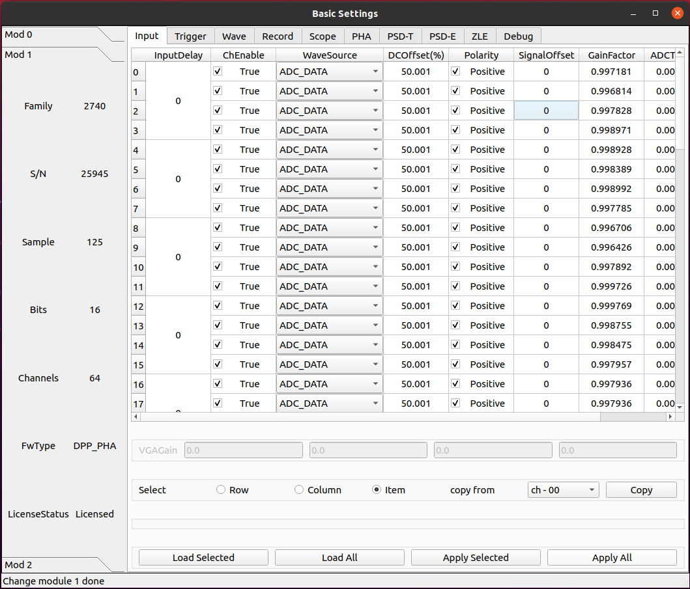
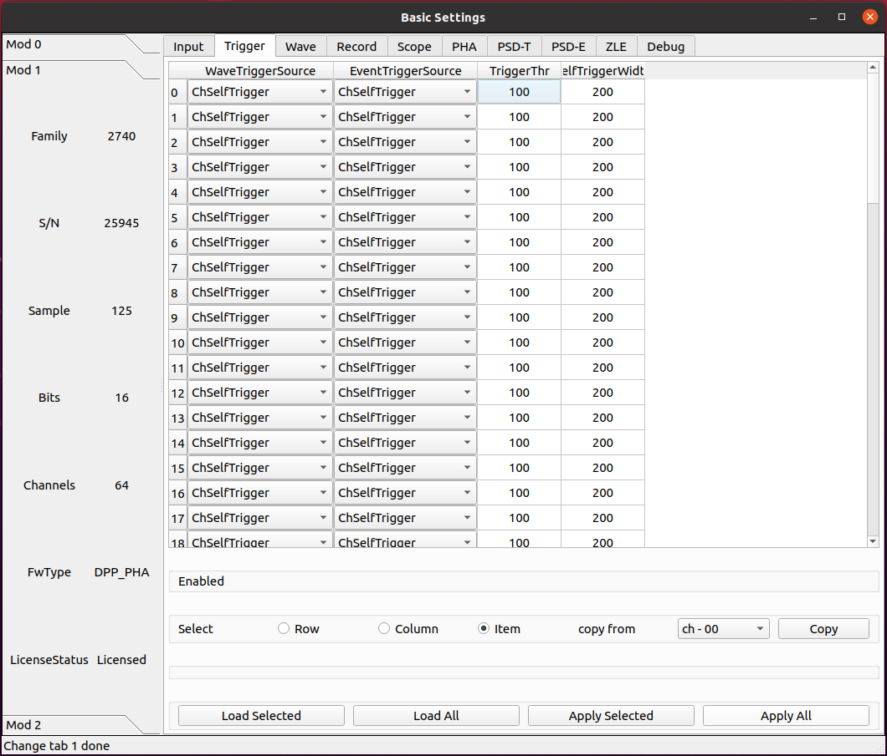
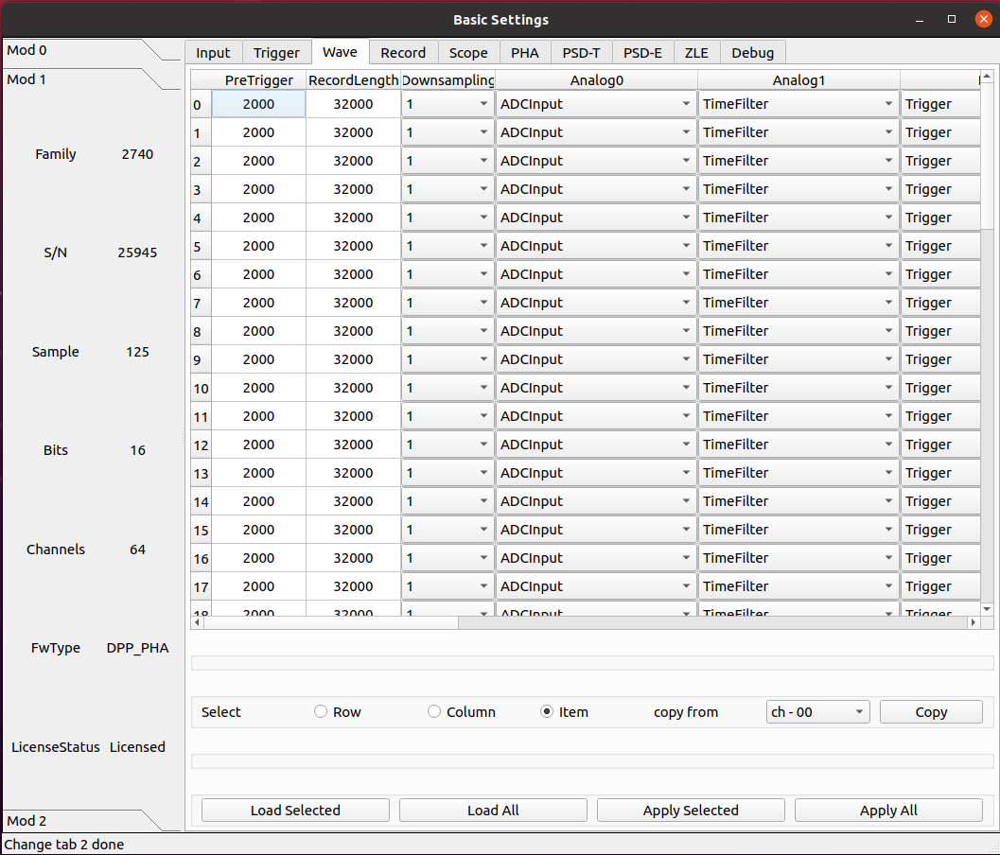
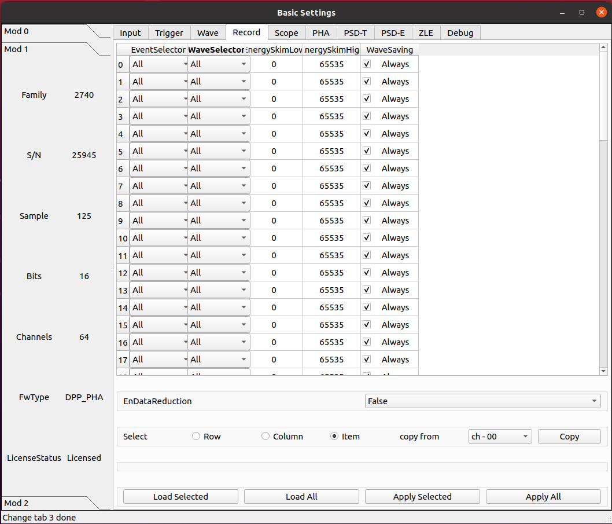
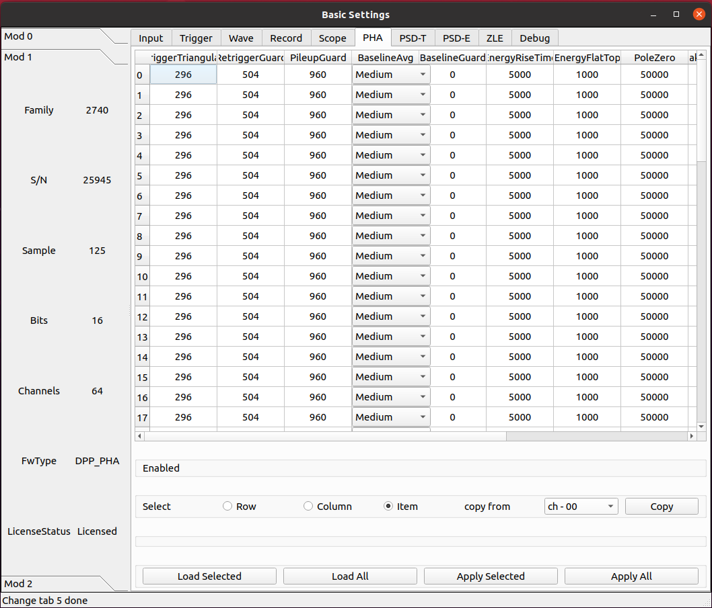
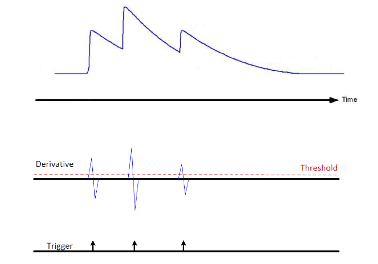
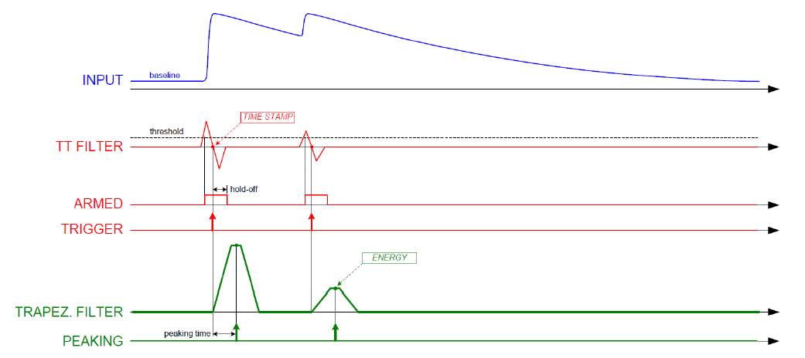
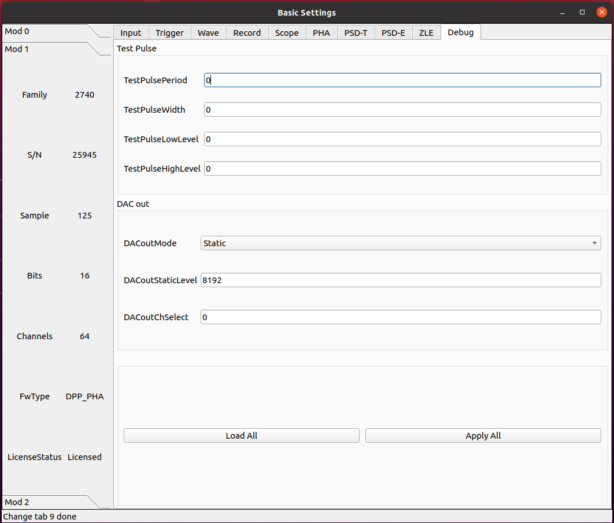

PHA 固件¶
基本参数配置¶
输入信号¶
参数 InputDelay¶
设置输入延迟，单位为采样点。
该值设置每 4 个通道共用一个相同配置。
参数 ChEnable¶
独立设定每个通道是否开启使用。如果通道不启用，它不提供任何数据，同时它的自触发也关闭。
参数 WaveSource¶
在正常模式下，采集的波形来源于模拟输入的 A/D 转换产生的 ADC 采样序列。出于测试目的，可以用内部数据生成器替换 ADC 数据。
- ADC_DATA
Data from the ADC (normal operating mode)
- ADC_TEST_TOGGLE
Toggle between 0x5555 and 0xAAAA (test mode)
- ADC_TEST_RAMP
16-bit ramp pattern (test mode)
- ADC_TEST_SIN
8-point sine wave test pattern
- ADC_TEST_PRBS
16-bit PRBS generated by a 23-bit PRBS pattern generator (test mode)
- Ramp
Data from a ramp generator. It is actually a 16-bit field, where the 6 most significant bits identify the channel and the 10 less significant bits are the samples of a ramp from 0x000 up to 0x3FF (i.e. 0 to 1023). It is so a 10-bit ramp with offset given by “channel*1024”. For channel 0, it is a counter from 0 to 1023; for channel 1, it is a counter from 1024 to 2047, and so on
- IPE
Not implemented
- SquareWave
Internally generated programmable square wave
参数 DCOffset¶
对于每个通道，将恒定的 DC 偏移（由 16 位 DAC 控制）添加到模拟输入，以在 ADC 的动态范围内调整信号基线的位置（即模拟输入的“零伏”）。
由于部件的公差，有必要校准偏移 DAC。校准是通过工厂测试完成的，通常不需要重新校准。然而，可以执行新的校准。校准参数存储在板的闪存中，并在通电时加载。每次写入或读取 DCoffset 参数时，内部逻辑会自动应用这些参数。
DCoffset 参数为数字，单位为满刻度的百分比。当 DCoffset为 0 时，输入信号的基线处于 ADC 0。当 DCoffset 为 100 时，输入信号的基线处于 ADC $2^{NBIT}-1$。
参数 Polarity¶
设置输入脉冲的极性。
- Positive
Positive polarity
- Negative
Negative polarity
参数 VGAGain¶
2745 特有。
以 0.5 dB 为步长设置可变增益放大器（VGA）的增益。参数设置每 16 个通道为一组， 64 通道分为 4 组。最小可设置为 0，最大为 40。
触发¶
参数 WaveTriggerSource¶
允许设置波形的触发源。
设置此参数意味着获得包括波形和相关时间戳以及能量信息的事件。
- Disabled
No trigger source enabled for the waveform
- Ch64Trigger
One (or more) channel self-trigger can generate a trigger for a waveform
- ChSelfTrigger
Channel self-trigger can generate a trigger for a waveform
- SwTrg
Software Trigger can generate a trigger for a waveform
- ADCOverSaturation
ADC Oversaturation can generate a trigger for a waveform
- ADCUnderSaturation
ADC Undersaturation can generate a trigger for a waveform
- ExternalInhibit
Inhibit can generate a trigger for a waveform
- TRGIN
External TRGIN can generate a trigger for a waveform
- GlobalTriggerSource
Acquisition Trigger Source (the same of the Scope mode) can generate a trigger for a waveform
- LVDS
A signal on the LVDS connectors can generate a trigger for a waveform
- ITLA
Internal Trigger Logic A can generate a trigger for a waveform
- ITLB
Internal Trigger Logic B can generate a trigger for a waveform
参数 EventTriggerSource¶
允许设置时间、能量（T-E）事件的触发源。设置此参数意味着获取包括时间戳和能量信息的事件。
- Disabled
No trigger source enabled for the T-E event
- Ch64Trigger
One (or more) channel self-trigger can generate a trigger for a T-E event
- ChSelfTrigger
Channel self-trigger can generate a trigger for a T-E event
- SwTrg
Software Trigger can generate a trigger for a T-E event
- TRGIN
External TRGIN can generate a trigger for a T-E event
- GlobalTriggerSource
Acquisition Trigger Source (the same of the Scope mode) can generate a trigger for a T-E event
- LVDS
A signal on the LVDS connectors can generate a trigger for a T-E event
- ITLA
Internal Trigger Logic A can generate a trigger for a T-E event
- ITLB
Internal Trigger Logic B can generate a trigger for a T-E event
参数 TriggerThr¶
相对于三角滤波之后的波形的设置阈值。
参数 SelfTriggerWidth¶
产生自触发信号的数字前沿甄别器的输出可以在“线性”模式下使用，这意味着它会持续信号保持在阈值以上（或以下）的时间，从而充当“过阈值”信号，或者可以通过可编程门产生器，使其成为固定宽度的脉冲。门产生器是不可再触发的单稳态，当超过阈值时变高，在编程时间后变低。该参数定义了过阈值的固定宽度脉冲。
波形¶
参数 PreTrigger¶
波形中触发器位置之前的时间（即预触发窗口的大小）。
单位为时间，ns
参数 RecordLength¶
波形大小（即采集窗口的大小）。波形的实际大小将自动四舍五入到最接近的允许值。通过读回参数可以得到确切的数值。记录时间长度取决于下采样设置。
单位为时间，ns
参数 DownsampingFactor¶
波形的下采样因子。
- 1
x1
- 2
x2
- 4
x4
- 8
x8
参数 Analog0/1¶
- ADCInput
ADC input probe
- TimeFilter
Time Filter probe
- EnergyFilter
Energy Filter probe
- EnergyFilterBaseline
Energy Filter Baseline
- EnergyFilterMinusBaseline
[Energy Filter – Baseline] probe
Digital0/1/2/3¶
- Trigger
Trigger probe
- TimeFilterArmed
Time Filter Armed probe
- ReTriggerGuard
ReTrigger Guard probe
- EnergyFilterBaselineFreeze
Energy Filter Baseline Freeze probe
- EnergyFilterPeaking
Energy Filter Peaking probe
- EnergyFilterPeakReady
Energy Filter Peak Ready probe
- EnergyFilterPileupGuard
Energy Filter Pile Up Guard probe
- EventPileUp
Event Pile Up probe
- ADCSaturation
ADC Saturation probe
- ADCSaturationProtection
ADC Saturation Protection probe
- PostSaturationEvent
Post Saturation Event probe
- EnergyFilterSaturation
Energy Filter Saturation probe
- AcquisitionInhibit
Acquisition Inhibit probe
数据记录¶
参数 EventSelector¶
设置必须保存的事件。
- All
All events are saved
- PileUp
Only pileup events are saved
- EnergySkim
Save only the events in the Energy Skim range
参数 WaveSelector¶
设置必须保存的波形。
- All
All waves are saved
- PileUp
Only pileup waves are saved
- EnergySkim
Save only waves in the Energy Skim range
参数 EnergySkimLowDiscriminator¶
允许标记能量高于低舍弃阈值的事件。16位。
参数 EnergySkimHighDiscriminator¶
允许标记能量低于高舍弃阈值的事件。16位。
参数 WaveSaving¶
允许始终保存波形或仅根据请求保存波形。
- Always
Waveforms are always saved
- OnRequest
Waveforms are saved on request
参数 EnDataReduction¶
如果启用，2 个 words 压缩为一个 word 事件。
PHA 参数¶
参数 TriggerTriangular¶
基于三角形滤波信号来区分事件，三角形滤波信号的上升时间可以由用户定义。然后设置的触发阈值是相对于三角滤波信号的，过阈值点为事件选择提供判据。触发点定义为微分信号本身的过零点。此参数设置三角形滤波器的上升时间。
单位为时间，ns
参数 RetriggerGuard¶
在诸如来自 PMT 的快速信号的情况下，可能发生快速甄别信号中的可能过冲，从而导致再触发，从而可能出现伪堆积。此参数设置禁止再触发保护时间（单位为 ns）。
参数 PileupGuard¶
如果两个事件的间隔小于梯形持续时间，则相关梯形重叠。梯形持续时间定义为 RT+FT+PileUpGuard，其中 RT 是梯形上升时间，FT 是梯形平顶，PileUpGuard 在峰值时间结束时开始（请参见 PeakingPosition）。此参数允许设置梯形滤波堆积保护（单位：ns）。
参数 BaselineAvg¶
允许为能量滤波启用低频滤波器
- Fixed
Baseline fixed at 0
- VeryLow
Baseline samples for average = 16
- Low
Baseline samples for average = 64
- MediumLow
Baseline samples for average = 256
- Medium
Baseline samples for average = 1024
- MediumHigh
Baseline samples for average = 4096
- High
Baseline samples for average = 16384
参数 BaselineGuard¶
除了“基线平均值”，用户还可以设置“基线保持”或“基线保护”值，以冻结梯形末端以外的基线计算，从而减少基线计算中的噪声。此参数允许设置峰值后的梯形滤波基线保护（单位：ns）。
参数 EnergyRiseTime¶
使用梯形滤波评估能量值。与传统的模拟电路中一样，整形放大器能够将电荷敏感前置放大器的指数形状转换为高度与脉冲能量成比例的高斯形状，就像梯形滤波能够将其转换为幅度与输入脉冲能量成比例的梯形信号一样。在这种类比中，能量滤波上升时间对应于成型时间乘以因子 2/2.5。
参数 EnergyFlatTop¶
输入脉冲的能量值被评估为梯形在其平顶区域中的高度。用户必须注意平顶确实是平的，并且峰值（即用于能量计算的样本）在平的区域中。此外，平顶和峰值的正确设置有助于正确评估能量，尤其是当涉及大体积探测器时，并且弹道亏损可能导致能量计算中的显著误差。在这种情况下，增加平顶持续时间并延迟峰值时间以等待完全电荷收集可能是实用的。此参数允许设置梯形平顶（以 ns 单位）。
参数 PoleZero¶
与整形放大器的高斯脉冲一样，梯形也需要精确的零点调整，以确保在下降沿结束时正确返回到基线。要正确设置零点，用户必须注意设置正确的梯形衰减时间值（也对应于输入衰减时间），以避免下冲或过冲效应。与脉冲衰减相比，当计数率高时，零点调整可以减少由于脉冲堆积而产生的信号伪影。
trapezoid_pole_zero.png
参数 PeakingPosition¶
以平顶的百分比（%）表示的梯形峰值位置。
步长为 1
参数 PeakingAvg¶
用于评估峰值的样本数。
- OneShot
1 sample
- LowAVG
4 samples
- MediumAVG
16 samples
- HighAVG
64 samples
参数 FineGain¶
允许设置能量精细增益。能量精细增益是一个数字乘法因子，不会改变满量程范围。
参数 LFLimitation¶
为能量滤波启用低频滤波器
- On
Enabled
- Off
Disabled
诊断¶
参数 TestPulsePeriod¶
测试脉冲是一种可编程方波，可用作内部周期性触发器（主要用于测试目的）或在 TRGOUT 和 GPIO 输出上生成逻辑测试脉冲（TTL 或 NIM）。此参数设置测试脉冲的周期。
单位为时间，ns
参数 TestPulseWidth¶
测试脉冲的宽度（信号保持高电平的时间）。
单位为时间，ns
参数 TestPulseLowLevel¶
以 ADC 道址表示的测试脉冲低电平
参数 TestPulseHighLevel¶
以 ADC 道址表示的测试脉冲高电平
参数 DACoutMode¶
选择要在前面板 DAC LEMO口输出发送的信号类型。
- Static
DAC output stays at a fixed level, given by the DACoutStaticLevel parameter
- Ramp
The DAC output is driven by a 14-bit counter
- Sin5MHz
The DAC output is a sine wave at 5 MHz with fixed amplitude
- Square
Square wave with period and with set by TestPulsePeriod and TestPulseWidth and amplitude between TestPulseLoweLevel and TestPulseHighLevel.
- IPE
Not implemented
- ChInput
The DAC reproduces the input signal received by one input channel, selected by the DACoutChSelect parameter
- MemOccupancy
Level of the memory occupancy (not yet implemented)
- ChSum
The DAC reproduces the “analog” sum of all the digitizer inputs (not yet implemented)
- OverThrSum
The DAC output is proportional to the number of channels that are currently above the threshold
参数 DACoutStaticLevel¶
当 DACoutMode = Static 时，此参数设置 DAC 输出的 14 位电平。
参数 DACoutChSelect¶
当 DACoutMode = ChInput 时，DAC 输出由该参数选择的通道的输入信号。